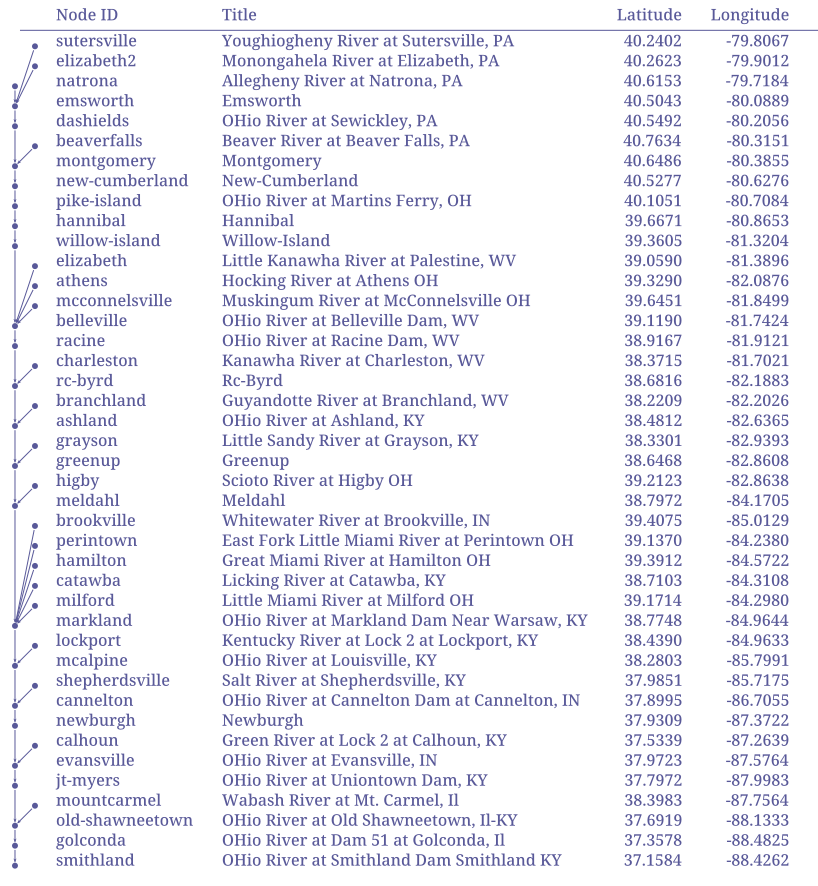
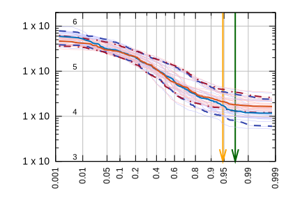

Preface
If you still want to use it for your projects, please do them with the knowledge that the API might change in next versions, and you might have to keep it updated until the system is stable. If you have any problems with the program, or would like some new features, please make an github issue, we will try to accomodate it if it fits within the scope of the program.
Who this book is for
This book has sections explaining the concepts of the NADI system, its developmental notes, user guide and developer guide.
Hence it can be useful for people who:
- Want to understand the concepts used in NADI,
- Want to use NADI system for their use case,
- Want to develop plugin system for NADI,
- Want to contribute to the NADI system packages, etc.
Although not intended, it might include resources and links to other materials related to Rust concepts, Geographical Information System (GIS) concepts, Hydrology concepts, etc. that people could potentially benefit from.
How to use this book
You can read this book sequentially to understand the concepts used in the NADI system. And then go through the references sections for a specific use cases you want to get into the details of.
If you are in a hurry, but this is your first time reading this book, at least read the Core Concepts, then refer to the section you are interested in.
Code Blocks
The code blocks will have example codes for various languages, most common will be string template, task, and rust codes.
String template and task have custom syntax highlights that is intended to make it easier for the reader to understand different semantic blocks.
For task scripts/functions, if relevant to the topic, they might
have Results block following immediately showing the results of the
execution.
For example:
network load_file("./data/mississippi.net")
node[ohio] render("{_NAME:case(title)} River")
Results:
{
ohio = "Ohio River"
}
Task and Rust code block might also include lines that are needed to get the results, but hidden due to being irrelevant to the discussion. In those cases you can use the eye icon on the top right side of the code blocks to make them visible. Similarly use the copy icon to copy the visible code into clipboard.
String Template Syntax Highlight
The syntax highlight here in this book makes it so that any unknown transformers will be marked for easy detection to mistakes.
This shows var = {var:unknown()}, {_var:case(title)}
Besides this, the syntax highlight can help you detect the variables
part (within {}), lisp expression (within =()), or commands
(within $()) in the template.
Note: commands are disabled, so they won’t run during template rendering process. But if you are rendering a template to run as a command, then they will be executed during that process.
Network Analysis and Data Integration (NADI)
NADI is group of software packages that facilitate network analysis and do data analysis on data related to network/nodes.
Trivia
- Nadi means River in Nepali (and probably in many south asian languages).
- First prototype of NADI was Not Available Data Integration, as it was meant to be an algorithm to fill data gaps using network information, but it was modified to be more generic for many network related analysis.
Installation
Nadi System is a suite of software packages each have different installation methods.
NADI CLI
Through Rust (Any OS)
Assuming you have rust and cargo setup in your system.
cargo install nadi-cli
Linux
OSX (Mac)
Windows
NADI GUI
Through Rust (Any OS)
Assuming you have rust and cargo setup in your system.
cargo install nadi-gui
Linux
OSX (Mac)
Windows
NADI Python Library
Assuming you have python and pip setup in your system.
pip install nadi-py # (TODO) publish to pip
Core Concepts
This section contains a brief explanation of core concepts. Refer to the Reference section for the full details on each.
Node
A Node is a point in network. A Node can have multiple input nodes and only one output node. And a Node can also have multiple attributes identifiable with their unique name, along with timeseries values also identifiable with their names.
If you understand graph theory, then node in nadi network is the same as a node in a graph.
Network
A Network is a collection of nodes. The network can also have attributes associated with it. The connection information is stored within the nodes itself. But Network will have nodes ordered based on their connection information. So that when you loop from node from first to last, you will always find output node before its input nodes.
A condition a nadi network is that it can only be a directed graph with tree structure.
Example Network file:
# network consists of edges where input node goes to output node
# each line is of the format: input -> output
tenessee -> ohio
# if your node name has characters outside of a-zA-Z_, you need to
# quote them as strings
ohio -> "lower-mississippi"
"upper-mississippi" -> "lower-mississippi"
missouri -> "lower-mississippi"
arkansas -> "lower-mississippi"
red -> "lower-mississippi"
The given network can be visualized as follows:
network load_file("./data/mississippi.net")
network export_svg(
"./output/mississippi.svg",
label="[{INDEX}] {_NAME:repl(-, ):case(title)}"
)
network clip()
# the link path needs to be relative to this file
network echo("../output/mississippi.svg")
Results:
Attributes
Attributes are TOML like values. They can be one of the following types:
| Type Name | Rust Type | Description |
|---|---|---|
| Bool | bool | Boolean values (true or false) |
| String | RString | Quoted String Values |
| Integer | i64 | Integer values (numbers) |
| Float | f64 | Float values (numbers with decimals) |
| Date | Date | Date (yyyy-mm-dd formatted) |
| Time | Time | Time (HH:MM, HH:MM:SS formatted) |
| DateTime | DateTime | Date and Time separed by or T |
| Array | RVec<Attribute> | List of any attribute values |
| Table | AttrMap | Key Value pairs of any attribute values |
Example Attribute File:
river = "Ohio River"
outlet = "Smithland Lock and Dam"
outlet_is_gage = true
outlet_site_no = ""
streamflow_start = 1930-06-07
mean_streamflow = 123456.0
obs_7q10 = 19405.3
nat_7q10 = 12335.9
num_dams_gages = 2348
String Template
String templates are strings with dynamic components that can be rendered for each node based on the node attributes.
A simple template can be like below:
Hi, my name is {name}, my address is {address?"N/A"}.
I wrote this document on {%A}, exact date: {%Y-%m-%d}.
Results (with: name=John; address=123 Road, USA):
Hi, my name is John, my address is 123 Road, USA.
I wrote this document on Monday, exact date: 2025-01-27.
With more complicated templates, we would be able to generate documents with text and images based on the node attributes as well.
For example the following template can be used to generate a table.
| Name | Index |
|------------------|---------|
<!-- ---8<--- -->
| {_NAME:case(up)} | {INDEX} |
<!-- ---8<--- -->
network load_file("./data/mississippi.net")
network render("./data/example.template")
Results:
| Name | Index |
|---|---|
| LOWER-MISSISSIPPI | 0 |
| UPPER-MISSISSIPPI | 1 |
| MISSOURI | 2 |
| ARKANSAS | 3 |
| RED | 4 |
| OHIO | 5 |
| TENESSEE | 6 |
Of course, there are better ways to generate table than this, but this shows how flexible the template system is.
Node Function
Node function runs on each node. It takes arguments and keyword arguments.
For example following node function takes multiple attribute names and prints them. The signature of the node function is print_attrs(*args).
network load_file("./data/mississippi.net")
node print_attrs("INDEX", name=false)
Results:
INDEX = 0
INDEX = 1
INDEX = 2
INDEX = 3
INDEX = 4
INDEX = 5
INDEX = 6
Only the NAME is printed as they do not have any other attributes.
Selective Execution
You can selectively run only a few nodes, or change the order the nodes are executed.
Given this network:
Inverse Order
network load_file("./data/mississippi.net")
node<inverse> print_attrs("NAME")
Results:
NAME = "tenessee"
NAME = "ohio"
NAME = "red"
NAME = "arkansas"
NAME = "missouri"
NAME = "upper-mississippi"
NAME = "lower-mississippi"
List of Nodes
network load_file("./data/mississippi.net")
node[tenessee,"lower-mississippi"] print_attrs("NAME")
Results:
NAME = "tenessee"
NAME = "lower-mississippi"
Path of Nodes
network load_file("./data/mississippi.net")
node[tenessee -> "lower-mississippi"] print_attrs("NAME")
Results:
NAME = "tenessee"
NAME = "ohio"
NAME = "lower-mississippi"
As we can see in the diagram, the path from tenessee to lower mississippi includes the ohio node.
Network Function
Network function runs on the network as a whole. It takes arguments and keyword arguments.
For example following network function takes file path as input to save the network in graphviz format:
save_graphviz(
outfile [PathBuf],
name [String] = "network",
global_attrs [String] = "",
node_attr [Option < Template >],
edge_attr [Option < Template >]
)
Note that, if the arguments have default values, or are optional, then you do not need to provide them.
For example, you can simply call the above function like this.
network load_file("./data/mississippi.net")
network save_graphviz("./output/test.gv")
network clip()
# the path link are relative to /src
network echo("./output/test.gv")
Results:
digraph network {
"upper-mississippi" -> "lower-mississippi"
"missouri" -> "lower-mississippi"
"arkansas" -> "lower-mississippi"
"red" -> "lower-mississippi"
"ohio" -> "lower-mississippi"
"tenessee" -> "ohio"
}
With extra commands you can also convert it into an image
network load_file("./data/mississippi.net")
network save_graphviz("./output/test.gv")
network command("dot -Tsvg ./output/test.gv -o ./output/test.svg")
network clip()
# the link path needs to be relative to this file
network echo("../output/test.svg")
Results:

Task
Tasks system acts like a pseudo scripting language for nadi system. A Task is a function call that can either be a node function or a network function. Functions are unique based on their names, and can have.
The code examples throughout this book, that are being used to generate network diagrams, tables, etc are run using the task system.
Here is an example contents of a task file:
# sample .tasks file which is like a script with functions
node print_attrs("uniqueID")
node show_node()
network save_graphviz("/tmp/test.gv")
node[WV04113,WV04112,WV04112] print_attr_toml("testattr2")
node render("{NAME} {uniqueID} {_Dam_Height_(Ft)?}")
node list_attr("; ")
# some functions can take variable number of inputs
network calc_attr_errors(
"Dam_Height_(Ft)",
"Hydraulic_Height_(Ft)",
"rmse", "nse", "abserr"
)
node sum_safe("Latitude")
node.inputsfirst render("Hi {SUM_ATTR}")
# multiple line for function arguments
network save_table(
"test.table",
"/tmp/test.tex",
true,
radius=0.2,
start = 2012-19-20,
end = 2012-19-23 12:04
)
node set_attrs(testattr = 2)
node set_attrs_render(testattr2 = "{testattr:calc(+2)}")
node[WV04112] render("{testattr} {testattr2}")
# here we use a complicated template that can do basic logic handling
node set_attrs_render(
testattr2 = "=(if (and (st+has 'Latitude) (> (st+num 'Latitude) 39)) 'true 'false)"
)
# same thing can be done if you need more flexibility in variable names
node load_toml_string(
"testattr2 = =(if (and (st+has 'Latitude) (> (st+num 'Latitude) 39)) 'true 'false)"
)
# selecting a list of nodes to run a function
node[
# comment here?
WV04113,
WV04112
] print_attr_toml("testattr2")
# selecting a path
node[WV04112 -> WV04113] render("=(> 2 3)")
Further Reading
If you need help on any functions. Use the help as a task. You can use help node or help network for specific help.
help node render
Results:
node render (template: '& Template', safe: 'bool' = false)
Render the template based on the node attributes
Arguments
- template: & Template String template to render
- safe: bool [def = false] if render fails keep it as it is instead of exiting
For more details on the template system. Refer to the String
Template section of the NADI book.
Or you can use nadi --fnhelp <function> using the nadi-cli.
Now that you have the overview of the nadi system’s data structures. We’ll jump into the software structure and how to setup and use the system.
If you want more details on any of the data structures refer the Developer’s references, or the library documentation.
Nadi Extension Capabilities
Nadi System can be extended for custom use cases with the following ways:
- LISP on String Template
- Task System
- Rust Library
- Python Library
- Plugin System
All Plugin Functions
All the functions available on this instance of nadi, are listed here.
Env Functions
| Plugin | Function | Help |
|---|---|---|
logic | eq | Greater than check |
attrs | float_transform | map values from the attribute based on the given table |
core | float | make a float from value |
regex | str_replace | Replace the occurances of the given match |
logic | lt | Greater than check |
core | str | make a string from value |
core | int | make an int from the value |
regex | str_match | Check if the given pattern matches the value or not |
regex | str_count | Count the number of matches of given pattern in the value |
logic | ifelse | Simple if else condition |
regex | str_find | Find the given pattern in the value |
command | exists | Checks if the given path exists |
core | attrmap | make an array from the arguments |
logic | or | boolean or |
logic | not | boolean not |
regex | str_find_all | Find all the matches of the given pattern in the value |
logic | and | Boolean and |
attrs | strmap | map values from the attribute based on the given table |
core | array | make an array from the arguments |
logic | gt | Greater than check |
core | type_name | Type name of the arguments |
Node Functions
| Plugin | Function | Help |
|---|---|---|
errors | calc_ts_error | Calculate Error from two timeseries values in the node |
datafill | load_csv_fill | |
timeseries | ts_len | Length of the timeseries |
print_node | print_node | Print the node with its inputs and outputs |
command | exists | Checks if the given path exists when rendering the template |
series | sr_mean | Type name of the series |
attrs | print_all_attrs | Print all attrs in a node |
render | render | Render the template based on the node attributes |
timeseries | ts_dtype | Type name of the timeseries |
attrs | print_attrs | Print the given node attributes if present |
timeseries | ts_list | List all timeseries in the node |
command | run | Run the node as if it’s a command if inputs are changed |
series | set_series | set the following series to the node |
series | sr_to_array | Make an array from the series |
attrs | has_attr | Check if the attribute is present |
series | sr_count | Number of series in the node |
series | sr_sum | Sum of the series |
attrs | set_attrs_ifelse | if else condition with multiple attributes |
errors | calc_ts_errors | Calculate Error from two timeseries values in the node |
attrs | get_attr | Retrive attribute |
series | sr_dtype | Type name of the series |
streamflow | check_negative | Check the given streamflow timeseries for negative values |
series | sr_len | Length of the series |
series | sr_list | List all series in the node |
timeseries | ts_count | Number of timeseries in the node |
attrs | first_attr | Return the first Attribute that exists |
attrs | set_attrs | Set node attributes |
attrs | load_attrs | Loads attrs from file for all nodes based on the given template |
graphics | attr_fraction_svg | Create a SVG file with the given network structure |
dams | count_node_if | Count the number of nodes upstream at each point that satisfies a certain condition |
dams | min_year | Propagate the minimum year downstream |
command | command | Run the given template as a shell command. |
attrs | set_attrs_render | Set node attributes based on string templates |
attrs | load_toml_render | Set node attributes based on string templates |
timeseries | ts_print | Print the given timeseries values in csv format |
Network Functions
| Plugin | Function | Help |
|---|---|---|
attrs | set_attrs_render | Set network attributes based on string templates |
graphics | table_to_svg | Create a SVG file with the given network structure |
errors | calc_attr_error | Calculate Error from two attribute values in the network |
core | count | Count the number of nodes in the network |
command | command | Run the given template as a shell command. |
graphviz | save_graphviz | Save the network as a graphviz file |
graphics | export_svg | Create a SVG file with the given network structure |
table | save_csv | Save CSV |
connections | load_file | Load the given file into the network |
gnuplot | plot_timeseries | Generate a gnuplot file that plots the timeseries data in the network |
debug | debug | Print the args and kwargs on this function |
fancy_print | fancy_print | Fancy print a network |
graphics | csv_count_na | Count the number of na values in CSV file for each nodes in a network |
debug | echo | Echo the string to stdout or stderr |
nadi_gis | gis_load_attrs | Load node attributes from a GIS file |
print_node | print_attr_csv | Print the given attributes in csv format with first column with node name |
render | render | Render a File template for the nodes in the whole network |
debug | clip | Echo the ––8<–– line for clipping syntax |
graphics | csv_load_ts | Count the number of na values in CSV file for each nodes in a network |
attrs | set_attrs | Set network attributes |
command | parallel | Run the given template as a shell command for each nodes in the network in parallel. |
timeseries | ts_print_csv | Save timeseries from all nodes into a single csv file |
connections | subset | Take a subset of network by only including the selected nodes |
visuals | set_nodesize_attrs | Set the node size of the nodes based on the attribute value |
nadi_gis | gis_save_connections | Save GIS file of the connections |
connections | save_file | Save the network into the given file |
html | export_map | Exports the network as a HTML map |
graphics | csv_data_blocks_svg | Draw the data blocks with arrows in timeline |
table | table_to_markdown | Render the Table as a rendered markdown |
nadi_gis | gis_save_nodes | Save GIS file of the nodes |
Plugin Development
As it is not possible to forsee all the use cases in advance, the nadi software can be easily extended (easy being an relative term) to account for different use cases.
The program can load compiled shared libraries (.dll in windows,
.so in linux, and .dylib on mac). Since they are shared libraries
compiled into binaries, any programming languages can be used to
generate those. So far, the nadi_core library is available for
Rust only. Using that, plugins can be written and those functions
can be made available from the system.
The syntax for functions in plugins are same for internal and external plugins. While the way to register the plugin differ slightly.
We will go through them very briefly here, and more details on them on their own pages.
Exporting Plugins
To export plugins, use [nadi_core::nadi_plugin::nadi_plugin] macro
for external plugins while use
[nadi_core::nadi_plugin::nadi_internal_plugin] for internal ones.
Example Usage
Ohio River Streamflow Routing Project
The Network for the flow routing is as follows:
network load_file("./data/ohio.network")
network export_svg(label="{_NAME}", outfile = "./output/ohio.svg")
network echo("../output/ohio.svg")
Results:

Making Tables
network load_file("./data/ohio.network")
node load_attrs("./data/attrs/{_NAME}.toml")
network clip()
# ^Ind => =(+ (st+num 'INDEX) 1)
<Node ID => {_NAME}
<Title => {_description:case(title):repl(Ky,KY):repl(In,IN):repl(Wv,WV):repl(Oh,OH)?}
>Latitude => {lat:f(4)}
>Longitude => {lon:f(4)}
Results:
| Node ID | Title | Latitude | Longitude |
|---|---|---|---|
| smithland | OHio River at Smithland Dam Smithland KY | 37.1584 | -88.4262 |
| golconda | OHio River at Dam 51 at Golconda, Il | 37.3578 | -88.4825 |
| old-shawneetown | OHio River at Old Shawneetown, Il-KY | 37.6919 | -88.1333 |
| mountcarmel | Wabash River at Mt. Carmel, Il | 38.3983 | -87.7564 |
| jt-myers | OHio River at Uniontown Dam, KY | 37.7972 | -87.9983 |
| evansville | OHio River at Evansville, IN | 37.9723 | -87.5764 |
| calhoun | Green River at Lock 2 at Calhoun, KY | 37.5339 | -87.2639 |
| newburgh | Newburgh | 37.9309 | -87.3722 |
| cannelton | OHio River at Cannelton Dam at Cannelton, IN | 37.8995 | -86.7055 |
| shepherdsville | Salt River at Shepherdsville, KY | 37.9851 | -85.7175 |
| mcalpine | OHio River at Louisville, KY | 38.2803 | -85.7991 |
| lockport | Kentucky River at Lock 2 at Lockport, KY | 38.4390 | -84.9633 |
| markland | OHio River at Markland Dam Near Warsaw, KY | 38.7748 | -84.9644 |
| milford | Little Miami River at Milford OH | 39.1714 | -84.2980 |
| catawba | Licking River at Catawba, KY | 38.7103 | -84.3108 |
| hamilton | Great Miami River at Hamilton OH | 39.3912 | -84.5722 |
| perintown | East Fork Little Miami River at Perintown OH | 39.1370 | -84.2380 |
| brookville | Whitewater River at Brookville, IN | 39.4075 | -85.0129 |
| meldahl | Meldahl | 38.7972 | -84.1705 |
| higby | Scioto River at Higby OH | 39.2123 | -82.8638 |
| greenup | Greenup | 38.6468 | -82.8608 |
| grayson | Little Sandy River at Grayson, KY | 38.3301 | -82.9393 |
| ashland | OHio River at Ashland, KY | 38.4812 | -82.6365 |
| branchland | Guyandotte River at Branchland, WV | 38.2209 | -82.2026 |
| rc-byrd | Rc-Byrd | 38.6816 | -82.1883 |
| charleston | Kanawha River at Charleston, WV | 38.3715 | -81.7021 |
| racine | OHio River at Racine Dam, WV | 38.9167 | -81.9121 |
| belleville | OHio River at Belleville Dam, WV | 39.1190 | -81.7424 |
| mcconnelsville | Muskingum River at McConnelsville OH | 39.6451 | -81.8499 |
| athens | Hocking River at Athens OH | 39.3290 | -82.0876 |
| elizabeth | Little Kanawha River at Palestine, WV | 39.0590 | -81.3896 |
| willow-island | Willow-Island | 39.3605 | -81.3204 |
| hannibal | Hannibal | 39.6671 | -80.8653 |
| pike-island | OHio River at Martins Ferry, OH | 40.1051 | -80.7084 |
| new-cumberland | New-Cumberland | 40.5277 | -80.6276 |
| montgomery | Montgomery | 40.6486 | -80.3855 |
| beaverfalls | Beaver River at Beaver Falls, PA | 40.7634 | -80.3151 |
| dashields | OHio River at Sewickley, PA | 40.5492 | -80.2056 |
| emsworth | Emsworth | 40.5043 | -80.0889 |
| natrona | Allegheny River at Natrona, PA | 40.6153 | -79.7184 |
| elizabeth2 | Monongahela River at Elizabeth, PA | 40.2623 | -79.9012 |
| sutersville | Youghiogheny River at Sutersville, PA | 40.2402 | -79.8067 |
Nadi style table with network information:
network load_file("./data/ohio.network")
node load_attrs("./data/attrs/{_NAME}.toml")
network clip()
network echo("../output/ohio-table.svg")
# ^Ind => =(+ (st+num 'INDEX) 1)
<Node ID => {_NAME}
<Title => {_description:case(title):repl(Ky,KY):repl(In,IN):repl(Wv,WV):repl(Oh,OH)?}
>Latitude => {lat:f(4)}
>Longitude => {lon:f(4)}
Results:

Generating Reports
So we write this template:
## Ohio River Routing Project
<!-- ---8<---:[smithland]: -->
Our basin Outlet is at {_description:case(title):repl(Ky,KY)} with the total basin area {basin_area:f(1)} acre-ft.
<!-- ---8<--- -->
The lower part of the Ohio basin are specifically important to us. Those are:
| ID | Basin Area | Length to Outlet |
|---------|-------------:|-----------------:|
<!-- ---8<---:[greenup -> smithland]: -->
| {_NAME} | {basin_area:f(1)} | {length:f(2)} |
<!-- ---8<--- -->
We used 4 locks and dams in the ohio river as representative locks and dams as below:
<!-- ---8<---:["willow-island",racine,markland,smithland]: -->
- {_NAME:repl(-, ):case(title)?}

<!-- ---8<--- -->
Which makes the table only for the main-stem ohio:
network load_file("./data/ohio.network")
node load_attrs("./data/attrs/{_NAME}.toml")
network clip()
network render("./data/ohio-report.template")
Results:
Ohio River Routing Project
Our basin Outlet is at Ohio River at Smithland Dam Smithland KY with the total basin area 371802.2 acre-ft.
The lower part of the Ohio basin are specifically important to us. Those are:
| ID | Basin Area | Length to Outlet |
|---|---|---|
| greenup | 159430.2 | 2603.80 |
| meldahl | 183215.2 | 2450.59 |
| markland | 214850.9 | 2293.44 |
| mcalpine | 236250.2 | 2172.82 |
| cannelton | 249382.5 | 1993.72 |
| newburgh | 253065.6 | 1903.58 |
| evansville | 275482.9 | 1878.29 |
| jt-myers | 277962.5 | 1791.07 |
| old-shawneetown | 363656.8 | 1772.27 |
| golconda | 370942.3 | 1701.32 |
| smithland | 371802.2 | 1675.95 |
We used 4 locks and dams in the ohio river as representative locks and dams as below:
-
Willow Island

-
Racine

-
Markland

-
Smithland

Analysing Timeseries
Looking at Data Gaps
Couting the gaps in a csv data with all the nodes is easy. Let’s look at the top 5 nodes with data gaps.
network load_file("./data/ohio.network")
network clip()
network csv_count_na(
"./data/ts/observed.csv",
sort=true,
head = 5
)
Results:
| Node | NAs |
|---|---|
| branchland | 33 |
| grayson | 3 |
| smithland | 1 |
| golconda | 1 |
| old-shawneetown | 1 |
Running it for two timeseries, and comparing them base don network information. We can see the downstream part have more missing data on natural timeseries.
network load_file("./data/ohio.network")
network csv_count_na("./data/ts/observed.csv", outattr = "observed_missing")
network csv_count_na("./data/ts/natural.csv", outattr = "natural_missing")
network table_to_svg(
template="
<Node=> {_NAME}
>Observed => {observed_missing}
>Natural => {natural_missing}
",
outfile="./output/natural-gaps.svg"
)
network clip()
network echo("
<center>
Number of Missing Days in Timeseries Data

<center>
")
Results:
Visualizing Data Gaps
To look at the temporal distribution of the gaps, we can use this function.
network load_file("./data/ohio.network")
network csv_count_na("./data/ts/natural.csv", outattr = "nat_na")
network csv_data_blocks_svg(
csvfile="./data/ts/natural.csv",
outfile="./output/natural-blocks.svg",
label="{_NAME} ({=(/ (st+num 'nat_na) 365.0):f(1)} yr)"
)
network clip()
network echo("../output/natural-blocks.svg")
Results:
network load_file("./data/ohio.network")
network csv_count_na("./data/ts/observed.csv", outattr = "obs_na")
network csv_data_blocks_svg(
csvfile="./data/ts/observed.csv",
outfile="./output/observed-blocks.svg",
label="{_NAME} ({obs_na})"
)
network clip()
network echo("../output/observed-blocks.svg")
Results:
Internal Plugins
There are some plugins that are provided with the nadi_core
library. They are part of the library, so users can directly use them.
For example in the following tasks file, the functions that are highlighted are functions available from the core plugins. Other functions need to be loaded from plugins.
# sample .tasks file which is like a script with functions
node print_attrs("uniqueID")
node show_node()
network save_graphviz("/tmp/test.gv")
node[WV04113,WV04112,WV04112] print_attr_toml("testattr2")
node render("{NAME} {uniqueID} {_Dam_Height_(Ft)?}")
node list_attr("; ")
# some functions can take variable number of inputs
network calc_attr_errors(
"Dam_Height_(Ft)",
"Hydraulic_Height_(Ft)",
"rmse", "nse", "abserr"
)
node sum_safe("Latitude")
node.inputsfirst render("Hi {SUM_ATTR}")
# multiple line for function arguments
network save_table(
"test.table",
"/tmp/test.tex",
true,
radius=0.2,
start = 2012-19-20,
end = 2012-19-23 12:04
)
node set_attrs(testattr = 2)
node set_attrs_render(testattr2 = "{testattr:calc(+2)}")
node[WV04112] render("{testattr} {testattr2}")
# here we use a complicated template that can do basic logic handling
node set_attrs_render(
testattr2 = "=(if (and (st+has 'Latitude) (> (st+num 'Latitude) 39)) 'true 'false)"
)
# same thing can be done if you need more flexibility in variable names
node load_toml_string(
"testattr2 = =(if (and (st+has 'Latitude) (> (st+num 'Latitude) 39)) 'true 'false)"
)
# selecting a list of nodes to run a function
node[
# comment here?
WV04113,
WV04112
] print_attr_toml("testattr2")
# selecting a path
node[WV04112 -> WV04113] render("=(> 2 3)")
Env Functions
strmap
env attrs.strmap(
attr: '& str',
attrmap: '& AttrMap',
default: 'Option < Attribute >'
)
Arguments
attr: '& str'=> Value to transform the attributeattrmap: '& AttrMap'=> Dictionary of key=value to map the data todefault: 'Option < Attribute >'=> Default value if key not found inattrmap
map values from the attribute based on the given table
float_transform
env attrs.float_transform(value: 'f64', transformation: '& str')
Arguments
value: 'f64'=> value to transformtransformation: '& str'=> transformation function, can be one of log/log10/sqrt
map values from the attribute based on the given table
Node Functions
load_attrs
node attrs.load_attrs(filename: 'PathBuf')
Arguments
filename: 'PathBuf'=> Template for the filename to load node attributes from
Loads attrs from file for all nodes based on the given template
Arguments
filename: Template for the filename to load node attributes fromverbose: print verbose message
The template will be rendered for each node, and that filename from the rendered template will be used to load the attributes.
Errors
The function will error out in following conditions:
- Template for filename is not given,
- The template couldn’t be rendered,
- There was error loading attributes from the file.
print_all_attrs
node attrs.print_all_attrs()
Arguments
Print all attrs in a node
No arguments and no errors, it’ll just print all the attributes in a node with
node::attr=val format, where,
- node is node name
- attr is attribute name
- val is attribute value (string representation)
print_attrs
node attrs.print_attrs(*attrs, name: 'bool')
Arguments
*attrs=>name: 'bool'=>
Print the given node attributes if present
Arguments
- attrs,… : list of attributes to print
- name: Bool for whether to show the node name or not
Error
The function will error if
- list of arguments are not
String - the
nameargument is not Boolean
The attributes will be printed in key=val format.
set_attrs
node attrs.set_attrs(**attrs)
Arguments
**attrs=> Key value pairs of the attributes to set
Set node attributes
Use this function to set the node attributes of all nodes, or a select few nodes using the node selection methods (path or list of nodes)
Error
The function should not error.
Example
Following will set the attribute a2d to true for all nodes
from A to D
node[A -> D] set_attrs(a2d = true)
get_attr
node attrs.get_attr(attr: '& str', default: 'Option < Attribute >')
Arguments
attr: '& str'=> Name of the attribute to getdefault: 'Option < Attribute >'=> Default value if the attribute is not found
Retrive attribute
has_attr
node attrs.has_attr(attr: '& str')
Arguments
attr: '& str'=> Name of the attribute to check
Check if the attribute is present
first_attr
node attrs.first_attr(attrs: '& [String]', default: 'Option < Attribute >')
Arguments
attrs: '& [String]'=> attribute namesdefault: 'Option < Attribute >'=> Default value if not found
Return the first Attribute that exists
set_attrs_ifelse
node attrs.set_attrs_ifelse(cond: 'bool', **values)
Arguments
cond: 'bool'=> Condition to check**values=> key = [val1, val2] where key is set as first ifcondis true else second
if else condition with multiple attributes
set_attrs_render
node attrs.set_attrs_render(**kwargs)
Arguments
**kwargs=> key value pair of attribute to set and the Template to render
Set node attributes based on string templates
load_toml_render
node attrs.load_toml_render(toml: '& Template', echo: 'bool' = false)
Arguments
toml: '& Template'=> String template to render and load as TOML stringecho: 'bool' = false=> Print the rendered toml or not
Set node attributes based on string templates
Network Functions
set_attrs
network attrs.set_attrs(**attrs)
Arguments
**attrs=> key value pair of attributes to set
Set network attributes
Arguments
key=value- Kwargs of attr = value
set_attrs_render
network attrs.set_attrs_render(**kwargs)
Arguments
**kwargs=> Kwargs of attr = String template to render
Set network attributes based on string templates
Env Functions
exists
env command.exists(path: 'PathBuf', min_lines: 'Option < usize >')
Arguments
path: 'PathBuf'=> Path to checkmin_lines: 'Option < usize >'=> Minimum number of lines the file should have
Checks if the given path exists
Node Functions
exists
node command.exists(path: 'Template', min_lines: 'Option < usize >')
Arguments
path: 'Template'=> Path to checkmin_lines: 'Option < usize >'=> Minimum number of lines the file should have
Checks if the given path exists when rendering the template
command
node command.command(
cmd: '& Template',
verbose: 'bool' = true,
echo: 'bool' = false
)
Arguments
cmd: '& Template'=> String Command template to runverbose: 'bool' = true=> Show the rendered version of command, and other messagesecho: 'bool' = false=> Echo the stdout from the command
Run the given template as a shell command.
Run any command in the shell. The standard output of the command
will be consumed and if there are lines starting with nadi:var:
and followed by key=val pairs, it’ll be read as new attributes
to that node.
For example if a command writes nadi:var:name="Joe" to stdout,
then the for the current node the command is being run for, name
attribute will be set to Joe. This way, you can write your
scripts in any language and pass the values back to the NADI
system.
It will also print out the new values or changes from old values,
if verbose is true.
Errors
The function will error if,
- The command template cannot be rendered,
- The command cannot be executed,
- The attributes from command’s stdout cannot be parsed properly
run
node command.run(
command: '& str',
inputs: '& str',
outputs: '& str',
verbose: 'bool' = true,
echo: 'bool' = false
)
Arguments
command: '& str'=> Node Attribute with the command to runinputs: '& str'=> Node attribute with list of input filesoutputs: '& str'=> Node attribute with list of output filesverbose: 'bool' = true=> Print the command being runecho: 'bool' = false=> Show the output of the command
Run the node as if it’s a command if inputs are changed
This function will not run a command node if all outputs are older than all inputs. This is useful to networks where each nodes are tasks with input files and output files.
Network Functions
parallel
network command.parallel(
cmd: '& Template',
_workers: 'i64' = 4,
verbose: 'bool' = true,
echo: 'bool' = false
)
Arguments
cmd: '& Template'=> String Command template to run_workers: 'i64' = 4=> Number of workers to run in parallelverbose: 'bool' = true=> Print the command being runecho: 'bool' = false=> Show the output of the command
Run the given template as a shell command for each nodes in the network in parallel.
Warning
Currently there is no way to limit the number of parallel processes, so please be careful with this command if you have very large number of nodes.
command
network command.command(
cmd: 'Template',
verbose: 'bool' = true,
echo: 'bool' = false
)
Arguments
cmd: 'Template'=> String Command template to runverbose: 'bool' = true=> Print the command being runecho: 'bool' = false=> Show the output of the command
Run the given template as a shell command.
Run any command in the shell. The standard output of the command
will be consumed and if there are lines starting with nadi:var:
and followed by key=val pairs, it’ll be read as new attributes
to that node.
See node command.command for more details as they have
the same implementation
Network Functions
load_file
network connections.load_file(file: 'PathBuf', append: 'bool' = false)
Arguments
file: 'PathBuf'=> File to load the network connections fromappend: 'bool' = false=> Append the connections in the current network
Load the given file into the network
This replaces the current network with the one loaded from the file.
subset
network connections.subset(keep: 'bool' = true)
Arguments
keep: 'bool' = true=> Keep the selected nodes (false = removes the selected)
Take a subset of network by only including the selected nodes
save_file
network connections.save_file(
file: 'PathBuf',
quote_all: 'bool' = true,
graphviz: 'bool' = false
)
Arguments
file: 'PathBuf'=> Path to the output filequote_all: 'bool' = true=> quote all node names; if false, doesn’t quote valid identifier namesgraphviz: 'bool' = false=> wrap the network into a valid graphviz file
Save the network into the given file
For more control on graphviz file writing use
save_graphviz from graphviz plugin instead.
Env Functions
type_name
env core.type_name(value: 'Attribute', recursive: 'bool' = false)
Arguments
value: 'Attribute'=> Argument to get typerecursive: 'bool' = false=> Recursively check types for array and table
Type name of the arguments
float
env core.float(value: 'Attribute', parse: 'bool' = true)
Arguments
value: 'Attribute'=> Argument to convert to floatparse: 'bool' = true=> parse string to float
make a float from value
str
env core.str(value: 'Attribute', quote: 'bool' = false)
Arguments
value: 'Attribute'=> Argument to convert to floatquote: 'bool' = false=> quote it if it’s literal string
make a string from value
int
env core.int(
value: 'Attribute',
parse: 'bool' = true,
round: 'bool' = true,
strfloat: 'bool' = false
)
Arguments
value: 'Attribute'=> Argument to convert to intparse: 'bool' = true=> parse string to intround: 'bool' = true=> round float into integerstrfloat: 'bool' = false=> parse string first as float before converting to int
make an int from the value
array
env core.array(*attributes)
Arguments
*attributes=> List of attributes
make an array from the arguments
attrmap
env core.attrmap(**attributes)
Arguments
**attributes=> name and values of attributes
make an array from the arguments
Network Functions
count
network core.count()
Arguments
Count the number of nodes in the network
If propagation is present, only counts those nodes
Network Functions
debug
network debug.debug(*args, **kwargs)
Arguments
*args=> Function arguments**kwargs=> Function Keyword arguments
Print the args and kwargs on this function
This function will just print out the args and kwargs the function is called with. This is for debugging purposes to see if the args/kwargs are identified properly. And can also be used to see how the nadi system takes the input from the function call.
echo
network debug.echo(
line: 'String',
error: 'bool' = false,
newline: 'bool' = true
)
Arguments
line: 'String'=> line to printerror: 'bool' = false=> print to stderr instead of stdoutnewline: 'bool' = true=> print newline at the end
Echo the string to stdout or stderr
This simply echoes anything given to it. This can be used in
combination with nadi tasks that create files (image, text,
etc). The echo function can be called to get the link to
those files back to the stdout.
Also useful for nadi preprocessor.
clip
network debug.clip(error: 'bool' = false)
Arguments
error: 'bool' = false=> print in stderr instead of in stdout
Echo the ––8<–– line for clipping syntax
This function is a utility function for the generation of nadi
book. This prints out the ----8<---- line when called, so
that mdbook preprocessor for nadi knows where to clip the
output for displaying it in the book.
This makes it easier to only show the relevant parts of the output in the documentation instead of having the user see output of other unrelated parts which are necessary for generating the results.
Example
Given the following tasks file:
net load_file("...")
net load_attrs("...")
net clip()
net render("{_NAME} {attr1}")
The clip function’s output will let the preprocessor know that only the parts after that are relevant to the user. Hence, it’ll discard outputs before that during documentation generation.
Env Functions
ifelse
env logic.ifelse(
cond: 'bool',
iftrue: 'Attribute',
iffalse: 'Attribute'
)
Arguments
cond: 'bool'=> Attribute that can be cast to bool valueiftrue: 'Attribute'=> Output ifcondis trueiffalse: 'Attribute'=> Output ifcondis false
Simple if else condition
gt
env logic.gt(a: '& Attribute', b: '& Attribute')
Arguments
a: '& Attribute'=> first attributeb: '& Attribute'=> second attribute
Greater than check
lt
env logic.lt(a: '& Attribute', b: '& Attribute')
Arguments
a: '& Attribute'=> first attributeb: '& Attribute'=> second attribute
Greater than check
eq
env logic.eq(a: '& Attribute', b: '& Attribute')
Arguments
a: '& Attribute'=> first attributeb: '& Attribute'=> second attribute
Greater than check
and
env logic.and(*conds)
Arguments
*conds=> List of attributes that can be cast to bool
Boolean and
or
env logic.or(*conds)
Arguments
*conds=> List of attributes that can be cast to bool
boolean or
not
env logic.not(cond: 'bool')
Arguments
cond: 'bool'=> attribute that can be cast to bool
boolean not
Env Functions
str_match
env regex.str_match(pattern: 'Regex', attr: '& str')
Arguments
pattern: 'Regex'=> Regex pattern to matchattr: '& str'=> attribute to check for pattern
Check if the given pattern matches the value or not
str_replace
env regex.str_replace(
pattern: 'Regex',
attr: '& str',
rep: '& str'
)
Arguments
pattern: 'Regex'=> Regex pattern to matchattr: '& str'=> attribute to replacerep: '& str'=> replacement string
Replace the occurances of the given match
str_find
env regex.str_find(pattern: 'Regex', attr: '& str')
Arguments
pattern: 'Regex'=> Regex pattern to matchattr: '& str'=> attribute to check for pattern
Find the given pattern in the value
str_find_all
env regex.str_find_all(pattern: 'Regex', attr: '& str')
Arguments
pattern: 'Regex'=> Regex pattern to matchattr: '& str'=> attribute to check for pattern
Find all the matches of the given pattern in the value
str_count
env regex.str_count(pattern: 'Regex', attr: '& str')
Arguments
pattern: 'Regex'=> Regex pattern to matchattr: '& str'=> attribute to check for pattern
Count the number of matches of given pattern in the value
Node Functions
render
node render.render(template: '& Template', safe: 'bool' = false)
Arguments
template: '& Template'=> String template to rendersafe: 'bool' = false=> if render fails keep it as it is instead of exiting
Render the template based on the node attributes
For more details on the template system. Refer to the String Template section of the NADI book.
Network Functions
render
network render.render(template: 'PathBuf', outfile: 'Option < PathBuf >')
Arguments
template: 'PathBuf'=> Path to the template fileoutfile: 'Option < PathBuf >'=> output file
Render a File template for the nodes in the whole network
Write the file with templates for input variables in the same way you write string templates. It’s useful for markdown files, as the curly braces syntax won’t be used for anything else that way. Do be careful about that. And the program will replace those templates with their values when you run it with inputs.
It’ll repeat the same template for each node and render them.
If you want only a portion of the file repeated for nodes
inclose them with lines with ---8<--- on both start and the
end. The lines containing the clip syntax will be ignored,
ideally you can put them in comments.
You can also use ---include:<filename>[::line_range] syntax to
include a file, the line_range syntax, if present, should be
in the form of start[:increment]:end, you can exclude start
or end to denote the line 1 or last line (e.g. :5 is 1:5,
and 3: is from line 3 to the end)
Arguments
template: Path to the template fileoutfile[Optional]: Path to save the template file, if none it’ll be printed in stdout
Node Functions
sr_count
node series.sr_count()
Arguments
Number of series in the node
sr_list
node series.sr_list()
Arguments
List all series in the node
sr_dtype
node series.sr_dtype(name: '& str', safe: 'bool' = false)
Arguments
name: '& str'=> Name of the seriessafe: 'bool' = false=> Do not error if series does’t exist
Type name of the series
sr_len
node series.sr_len(name: '& str', safe: 'bool' = false)
Arguments
name: '& str'=> Name of the seriessafe: 'bool' = false=> Do not error if series does’t exist
Length of the series
sr_mean
node series.sr_mean(name: '& str')
Arguments
name: '& str'=> Name of the series
Type name of the series
sr_sum
node series.sr_sum(name: '& str')
Arguments
name: '& str'=> Name of the series
Sum of the series
set_series
node series.set_series(
name: '& str',
value: 'Attribute',
dtype: '& str'
)
Arguments
name: '& str'=> Name of the series to save asvalue: 'Attribute'=> Argument to convert to seriesdtype: '& str'=> type
set the following series to the node
sr_to_array
node series.sr_to_array(name: '& str', safe: 'bool' = false)
Arguments
name: '& str'=> Name of the seriessafe: 'bool' = false=> Do not error if series does’t exist
Make an array from the series
Network Functions
save_csv
network table.save_csv(path: '& Path', *fields)
Arguments
path: '& Path'=>*fields=>
Save CSV
table_to_markdown
network table.table_to_markdown(
table: 'Option < PathBuf >',
template: 'Option < String >',
outfile: 'Option < PathBuf >',
connections: 'Option < String >'
)
Arguments
table: 'Option < PathBuf >'=> Path to the table filetemplate: 'Option < String >'=> String template for tableoutfile: 'Option < PathBuf >'=> Path to the output fileconnections: 'Option < String >'=> Show connections column or not
Render the Table as a rendered markdown
Error
The function will error out if,
- error reading the table file,
- error parsing table template,
- neither one of table file or table template is provided,
- error while rendering markdown (caused by error on rendering cell values from templates)
- error while writing to the output file
Node Functions
ts_count
node timeseries.ts_count()
Arguments
Number of timeseries in the node
ts_list
node timeseries.ts_list()
Arguments
List all timeseries in the node
ts_dtype
node timeseries.ts_dtype(name: '& str', safe: 'bool' = false)
Arguments
name: '& str'=> Name of the timeseriessafe: 'bool' = false=> Do not error if timeseries does’t exist
Type name of the timeseries
ts_len
node timeseries.ts_len(name: '& str', safe: 'bool' = false)
Arguments
name: '& str'=> Name of the timeseriessafe: 'bool' = false=> Do not error if timeseries does’t exist
Length of the timeseries
ts_print
node timeseries.ts_print(
name: '& String',
header: 'bool' = true,
head: 'Option < i64 >'
)
Arguments
name: '& String'=> name of the timeseriesheader: 'bool' = true=> show headerhead: 'Option < i64 >'=> number of head rows to show (all by default)
Print the given timeseries values in csv format
TODO
- save to file instead of showing with
outfile: Option<PathBuf>
Network Functions
ts_print_csv
network timeseries.ts_print_csv(
name: 'String',
head: 'Option < usize >',
nodes: 'Option < HashSet < String > >'
)
Arguments
name: 'String'=> Name of the timeseries to savehead: 'Option < usize >'=> number of head rows to show (all by default)nodes: 'Option < HashSet < String > >'=> Include only these nodes (all by default)
Save timeseries from all nodes into a single csv file
TODO: error/not on unqual length
TODO: error/not on no timeseries, etc…
TODO: output to file: PathBuf
Network Functions
set_nodesize_attrs
network visuals.set_nodesize_attrs(
attr: 'String',
default: 'Option < f64 >',
minsize: 'f64' = 4.0,
maxsize: 'f64' = 12.0
)
Arguments
attr: 'String'=> Attribute to use for size scalingdefault: 'Option < f64 >'=> default value of the attribute if not foundminsize: 'f64' = 4.0=> minimum size of the nodemaxsize: 'f64' = 12.0=> maximum size of the node
Set the node size of the nodes based on the attribute value
External Plugins
This section showcases the functions from external plugins developed along side the NADI project due to various reasons.
The plugins listed here can be installed with following steps:
- clone the repository of external plugins,
- compile it locally with cargo,
- move all generated dynamic libraries to the nadi plugin directory.
Node Functions
count_node_if
node dams.count_node_if(count_attr: '& str', cond: 'bool')
Arguments
count_attr: '& str'=>cond: 'bool'=>
Count the number of nodes upstream at each point that satisfies a certain condition
min_year
node dams.min_year(yearattr: '& str', write_var: '& str' = "MIN_YEAR")
Arguments
yearattr: '& str'=>write_var: '& str' = "MIN_YEAR"=>
Propagate the minimum year downstream
Node Functions
load_csv_fill
node datafill.load_csv_fill(
name: 'String',
file: 'Template',
columns: '(String, String)',
timefmt: 'String',
method: 'DataFillMethod' = Linear,
dtype: 'String' = "Floats"
)
Arguments
name: 'String'=> Name of the timeseriesfile: 'Template'=> Template of the CSV file for the nodescolumns: '(String, String)'=> Names of date column and value columntimefmt: 'String'=> date time format, if you only have date, but have time on format string, it will panicmethod: 'DataFillMethod' = Linear=> Method to use for data filling: forward/backward/lineardtype: 'String' = "Floats"=> DataType to load into timeseries
Node Functions
calc_ts_error
node errors.calc_ts_error(
ts1: '& str',
ts2: '& str',
error: '& str' = "rmse"
)
Arguments
ts1: '& str'=> Timeseries value to use as actual valuets2: '& str'=> Timeseries value to be used to calculate the errorerror: '& str' = "rmse"=> Error type, one of rmse/nrmse/abserr/nse
Calculate Error from two timeseries values in the node
It calculates the error between two timeseries values from the node
calc_ts_errors
node errors.calc_ts_errors(
ts1: '& String',
ts2: '& String',
errors: '& [String]'
)
Arguments
ts1: '& String'=> Timeseries value to use as actual valuets2: '& String'=> Timeseries value to be used to calculate the errorerrors: '& [String]'=> Error types to calculate, one of rmse/nrmse/abserr/nse
Calculate Error from two timeseries values in the node
It calculates the error between two timeseries values from the node.
Network Functions
calc_attr_error
network errors.calc_attr_error(
attr1: 'String',
attr2: 'String',
error: 'String' = "rmse"
)
Arguments
attr1: 'String'=> Attribute value to use as actual valueattr2: 'String'=> Attribute value to be used to calculate the errorerror: 'String' = "rmse"=> Error type, one of rmse/nrmse/abserr/nse
Calculate Error from two attribute values in the network
It calculates the error using two attribute values from all the nodes.
Network Functions
fancy_print
network fancy_print.fancy_print()
Arguments
Fancy print a network
Network Functions
plot_timeseries
network gnuplot.plot_timeseries(
csvfile: 'Template',
datecol: '& str',
datacol: '& str',
outfile: '& Path',
timefmt: '& str' = "%Y-%m-%d",
config: '& GnuplotConfig' = GnuplotConfig { outfile: None, terminal: None, csv: false, preamble: "" },
skip_missing: 'bool' = false
)
Arguments
csvfile: 'Template'=>datecol: '& str'=>datacol: '& str'=>outfile: '& Path'=>timefmt: '& str' = "%Y-%m-%d"=>config: '& GnuplotConfig' = GnuplotConfig { outfile: None, terminal: None, csv: false, preamble: "" }=>skip_missing: 'bool' = false=>
Generate a gnuplot file that plots the timeseries data in the network
Node Functions
attr_fraction_svg
node graphics.attr_fraction_svg(
attr: '& str',
outfile: '& Template',
color: '& AttrColor',
height: 'f64' = 80.0,
width: 'f64' = 80.0,
margin: 'f64' = 10.0
)
Arguments
attr: '& str'=>outfile: '& Template'=>color: '& AttrColor'=>height: 'f64' = 80.0=>width: 'f64' = 80.0=>margin: 'f64' = 10.0=>
Create a SVG file with the given network structure
Network Functions
csv_load_ts
network graphics.csv_load_ts(
file: 'PathBuf',
name: 'String',
date_col: 'String' = "date",
timefmt: 'String' = "%Y-%m-%d",
data_type: 'String' = "Floats"
)
Arguments
file: 'PathBuf'=>name: 'String'=>date_col: 'String' = "date"=>timefmt: 'String' = "%Y-%m-%d"=>data_type: 'String' = "Floats"=>
Count the number of na values in CSV file for each nodes in a network
Arguments
file: Input CSV file path to read (should have column with node names for all nodes)name: Name of the timeseriesdate_col: Date Column nametimefmt: date time format, if you only have date, but have time on format string, it will panicdata_type: Type of the data to cast into
csv_count_na
network graphics.csv_count_na(
file: 'PathBuf',
outattr: 'Option < String >',
sort: 'bool' = false,
skip_zero: 'bool' = false,
head: 'Option < i64 >'
)
Arguments
file: 'PathBuf'=>outattr: 'Option < String >'=>sort: 'bool' = false=>skip_zero: 'bool' = false=>head: 'Option < i64 >'=>
Count the number of na values in CSV file for each nodes in a network
Arguments
file: Input CSV file path to read (should have column with node names for all nodes)outattr: Output attribute to save the count of NA to. If empty print to stdoutsort: show the nodes with larger gaps on top, only applicable while printinghead: at max show only this number of nodesskip_zero: skip nodes with zero missing numbers
csv_data_blocks_svg
network graphics.csv_data_blocks_svg(
csvfile: 'PathBuf',
outfile: 'PathBuf',
label: 'Template',
date_col: 'String' = "date",
config: 'NetworkPlotConfig' = NetworkPlotConfig { width: 250.0, height: 300.0, delta_x: 20.0, delta_y: 20.0, offset: 30.0, radius: 3.0, fontsize: 16.0, fontface: FontFace { inner: Shared { inner: 0x5747b6ea6a20 } } },
blocks_width: 'f64' = 500.0,
fit: 'bool' = false
)
Arguments
csvfile: 'PathBuf'=>outfile: 'PathBuf'=>label: 'Template'=>date_col: 'String' = "date"=>config: 'NetworkPlotConfig' = NetworkPlotConfig { width: 250.0, height: 300.0, delta_x: 20.0, delta_y: 20.0, offset: 30.0, radius: 3.0, fontsize: 16.0, fontface: FontFace { inner: Shared { inner: 0x5747b6ea6a20 } } }=>blocks_width: 'f64' = 500.0=>fit: 'bool' = false=>
Draw the data blocks with arrows in timeline
export_svg
network graphics.export_svg(
outfile: 'PathBuf',
config: 'NetworkPlotConfig' = NetworkPlotConfig { width: 250.0, height: 300.0, delta_x: 20.0, delta_y: 20.0, offset: 30.0, radius: 3.0, fontsize: 16.0, fontface: FontFace { inner: Shared { inner: 0x5747b6ea6a20 } } },
fit: 'bool' = false,
label: 'Option < Template >',
highlight: '& [usize]' = []
)
Arguments
outfile: 'PathBuf'=>config: 'NetworkPlotConfig' = NetworkPlotConfig { width: 250.0, height: 300.0, delta_x: 20.0, delta_y: 20.0, offset: 30.0, radius: 3.0, fontsize: 16.0, fontface: FontFace { inner: Shared { inner: 0x5747b6ea6a20 } } }=>fit: 'bool' = false=>label: 'Option < Template >'=>highlight: '& [usize]' = []=>
Create a SVG file with the given network structure
table_to_svg
network graphics.table_to_svg(
outfile: 'PathBuf',
table: 'Option < PathBuf >',
template: 'Option < String >',
config: 'NetworkPlotConfig' = NetworkPlotConfig { width: 250.0, height: 300.0, delta_x: 20.0, delta_y: 20.0, offset: 30.0, radius: 3.0, fontsize: 16.0, fontface: FontFace { inner: Shared { inner: 0x5747b6ea6a20 } } },
fit: 'bool' = false,
highlight: '& [String]' = []
)
Arguments
outfile: 'PathBuf'=>table: 'Option < PathBuf >'=>template: 'Option < String >'=>config: 'NetworkPlotConfig' = NetworkPlotConfig { width: 250.0, height: 300.0, delta_x: 20.0, delta_y: 20.0, offset: 30.0, radius: 3.0, fontsize: 16.0, fontface: FontFace { inner: Shared { inner: 0x5747b6ea6a20 } } }=>fit: 'bool' = false=>highlight: '& [String]' = []=>
Create a SVG file with the given network structure
Network Functions
save_graphviz
network graphviz.save_graphviz(
outfile: '& Path',
name: '& str' = "network",
global_attrs: '& str' = "",
node_attr: 'Option < & Template >',
edge_attr: 'Option < & Template >'
)
Arguments
outfile: '& Path'=>name: '& str' = "network"=>global_attrs: '& str' = ""=>node_attr: 'Option < & Template >'=>edge_attr: 'Option < & Template >'=>
Save the network as a graphviz file
Arguments:
outfile- Path to the output filename- Name of the graph
Network Functions
export_map
network html.export_map(
outfile: '& Path',
template: 'Template',
pagetitle: '& str' = "NADI Network",
nodetitle: 'Template' = Template { original: "{_NAME}", parts: [Var("_NAME", "")] },
connections: 'bool' = true
)
Arguments
outfile: '& Path'=>template: 'Template'=>pagetitle: '& str' = "NADI Network"=>nodetitle: 'Template' = Template { original: "{_NAME}", parts: [Var("_NAME", "")] }=>connections: 'bool' = true=>
Exports the network as a HTML map
Network Functions
gis_load_attrs
network nadi_gis.gis_load_attrs(
file: 'PathBuf',
node: 'String',
layer: 'Option < String >',
geometry: 'String' = "GEOM",
ignore: 'String' = "",
sanitize: 'bool' = true,
err_no_node: 'bool' = false
)
Arguments
file: 'PathBuf'=> GIS file to load (can be any format GDAL can understand)node: 'String'=> Field in the GIS file corresponding to node namelayer: 'Option < String >'=> layer of the GIS file, first one picked by defaultgeometry: 'String' = "GEOM"=> Attribute to save the GIS geometry inignore: 'String' = ""=> Field names separated by comma, to ignoresanitize: 'bool' = true=> sanitize the name of the fieldserr_no_node: 'bool' = false=> Error if all nodes are not found in the GIS file
Load node attributes from a GIS file
The function reads a GIS file in any format (CSV, GPKG, SHP, JSON, etc) and loads their fields as attributes to the nodes.
gis_save_connections
network nadi_gis.gis_save_connections(
file: 'PathBuf',
geometry: 'String',
driver: 'Option < String >',
layer: 'String' = "network"
)
Arguments
file: 'PathBuf'=>geometry: 'String'=>driver: 'Option < String >'=>layer: 'String' = "network"=>
Save GIS file of the connections
gis_save_nodes
network nadi_gis.gis_save_nodes(
file: 'PathBuf',
geometry: 'String',
attrs: 'HashMap < String, String >' = {},
driver: 'Option < String >',
layer: 'String' = "nodes"
)
Arguments
file: 'PathBuf'=>geometry: 'String'=>attrs: 'HashMap < String, String >' = {}=>driver: 'Option < String >'=>layer: 'String' = "nodes"=>
Save GIS file of the nodes
Node Functions
print_node
node print_node.print_node()
Arguments
Print the node with its inputs and outputs
Network Functions
print_attr_csv
network print_node.print_attr_csv(*args)
Arguments
*args=>
Print the given attributes in csv format with first column with node name
Node Functions
check_negative
node streamflow.check_negative(ts_name: '& str')
Arguments
ts_name: '& str'=>
Check the given streamflow timeseries for negative values
Data Structure
This section will describe the data structures associated with NADI system in brief.
For more accurate and upto date details on the data structures and their available methods. Look at the API reference of nadi_core on docs.rs.
Node
Points with attributes and timeseries. These can be any point as long as they’ll be on the network and connection to each other.
The attributes can be any format. There is a special type of attribute timeseries to deal with timeseries data that has been provided by the system. But users are free to make their own attributes and plugins + functions that can work with those attributes.
Since attributes are loaded using TOML file, simple attributes can be stored and parsed from strings, moderately complex ones can be saved as a combination of array and tables, and more complex ones can be saved in different files and their path can be stored as node attributes.
Here is an example node attribute file. Here we have string, float, int and boolean values, as well as a example csv timeseries
stn="smithland"
nat_7q10=12335.94850131619
orsanco_7q10=16900
lock=true
[ts.csv]
streamflow = {path="data/smithland.csv", datetime="date", data="flow"}
Network
Collection of Nodes, with Connection information. The connection information is saved in the nodes itself (=inputs= and =output= variables), but they are assigned from the network.
The nadi system (lit, river system), is designed for the connections between points along a river. Out of different types of river networks possible, it can only handle non-branching tributaries system, where each point can have zero to multiple inputs, but can only have one output. Overall the system should have a single output point. There can be branches in the river itself in the physical sense as long as they converse before the next point of interests. There cannot be node points that have more than one path to reach another node in the representative system.
Network file are simple text files with each edge on one line. Node
names can be words with alphanumeric characters with the additional
character _, similar to how rust identifiers work. The Node names
can also be quoted strings, in those cases any characters are
supported inside the quotes.
Here is an example network file,
cannelton -> newburgh
newburgh -> evansville
evansville -> "jt-myers"
# comments are supported
"jt-myers" -> "old-shawneetown"
"old-shawneetown" -> golconda
markland -> mcalpine
golconda -> smithland
Drawing it out:
network load_file("./data/mississippi.net")
network export_svg(
"./output/mississippi.svg",
label="[{INDEX}] {_NAME:repl(-, ):case(title)}"
)
network clip()
# the link path needs to be relative to this file
network echo("../output/mississippi.svg")
Results:
The program also plans to support the connection import from the DOT format (graphviz package).
Network file without any connection format can be written as a node per line, but those network can only call sequential functions, and not input dependent ones.
Depending on the use cases, it can probably be applied to other systems that are similar to a river system. Or even without the connection information, the functions that are independent to each other can be run in sequential order.
Timeseries
Timeseries of values, at regular interval. Can support integers, floats, booleans, strings, Arrays and Tables.
For timeseries that are not in a format that NADI can understand. The path to the timeseries can be provided as a node attribute and plugin functions can be written to use that path to load the timeseries for the node.
String Templates
The templating system will be used by an external library developed by me. The library can be modified if there are specific needs for this project.
The template system is feature rich, allowing for formatting, simple string transformations, and airthmatic calculations based on the variables (node attributes in this case). This can be used to generate file paths, and similar strings based on node attributes, as well as to format the cell values for exported table, figures, etc.
The template library is also available for Rust, C and C++, but
all the interactions with the templates will be done through the
nadi interface, so that is not required.
Documentations on the template system, can be redirected to
the string_template_plus library page.
Brief explanation on the template system is given below.
Template Parts
Templates have variables, time formats, expressions, and commands (disabled by default);
Hi, my name is {name}, my address is {address?"N/A"}.
Current time is {%H} hour {%M} minutes.
Results (with: name=John; address=123 Road, USA):
Hi, my name is John, my address is 123 Road, USA.
Current time is 21 hour 56 minutes.
Optional Variables
Variables can be chained in an optional way, so the first one that’s
found will be used (e.g. {nickname?name} will render nickname if
it’s present, else name);
Hi, I am {nickname?name}, my address is {address?"N/A"}.
Results (with: name=John; nickname=J; address=123 Road, USA):
Hi, I am J, my address is 123 Road, USA.
String Literal
Variables when replaced with literal strings (quoted strings), they
will be used directly {address?"N/A"} will render N/A is
address is not present;
Hi, I am {nickname?name}, my address is {address?"N/A"}.
Results (with: name=John):
Hi, I am John, my address is N/A.
Transformers
Variables can have optional transformers which transform the string based on their rules, (e.g. float transformer will truncate the float, upcase will make the string UPPERCASE, etc.);
Hi, I am {nickname?name:case(up)}, my address is {address?"N/A"}.
Results (with: name=Joe):
Hi, I am JOE, my address is N/A.
Time formats
time formats are formatted current time (e.g. {%Y} will become
2024 as of now);
Today is {%B %d} of the year {%Y}.
Results (with: name=John):
Today is January 27 of the year 2025.
Lisp Expressions
expressions are lisp expressions that will be evaluated and the
results will be used. The lisp expression can also access any
variables and do any supported programming. (e.g. (+ 1 1) in lisp
will become 2);
guess my age(x) if: (x + 21) * 4 = =(* (+ (st+num 'age) 21) 4).
Results (with: age=20):
guess my age(x) if: (x + 21) * 4 = 164.
NADI Specific options
Besides the above points, specific to nadi system, any node template
will have all the variables from node attributes available as strings
for template. For string variables, their name can be used to access
quoted string format, while their name with underscore prefix will be
unquoted raw string. (e.g. if we have attribute name="smithland",
then {name} will render to "smithland", while {_name} will
render to smithland).
Nadi system uses templates in a variety of place, and plugin functions
also sometimes take templates for file path, or strings, and such
things. Look at the help string of the function to see if it takes
String or Template type.
For example render is a function that takes a template and prints it
after rendering it for each node.
network load_file("./data/mississippi.net")
node[ohio] set_attrs(river="the Ohio River", streamflow=45334.12424343)
node[ohio,red] render(
"(=(+ 1 (st+num 'INDEX))th node) {_NAME:case(title)}
River Flow = {streamflow:calc(/10000):f(3)?\"NA\"} x 10^4"
)
Results:
{
ohio = "(6th node) Ohio\n\tRiver Flow = 4.533 x 10^4",
red = "(5th node) Red\n\tRiver Flow = NA x 10^4"
}
As seen in above example, you can render variables, transform them, use basic calculations.
Or you can use lisp syntax to do more complex calculations. Refer to
Nadi Extension Capabilities section for more
info on how to use lisp on string template.
network load_file("./data/mississippi.net")
node[ohio] set_attrs(river="the Ohio River", streamflow=45334.12424343)
node[ohio] render(
"{_river:case(title)} Streamflow
from lisp = {=(/ (st+num 'streamflow) 1000):f(2)} x 10^3 cfs"
)
Results:
{
ohio = "The Ohio River Streamflow\n\tfrom lisp = 45.33 x 10^3 cfs"
}
Some Complex Examples
Optional variables and a command; note that commands can have variables inside them:
hi there, this {is?a?"test"} for $(echo a simple case {that?} {might} be "possible")
Results (with: might=may):
hi there, this test for $(echo a simple case may be possible)
Optional variables with transformers inside command.
Hi {like?a?"test"} for $(this does {work:case(up)} now) (yay)
Results (with: work=Fantastic Job):
Hi test for $(this does FANTASTIC JOB now) (yay)
If you need to use { and } in a template, you can escape them. Following template shows how LaTeX commands can be generated from templates.
more {formatting?} options on {%F} and
\\latex\{command\}\{with {variable}\}, should work.
Results (with: command=Error;variable=Var):
more options on 2025-01-27 and
\latex{command}{with Var}, should work.
This just combined a lot of different things from above:
let's try {every:f(2)?and?"everything"}
for $(a complex case {that?%F?} {might?be?not?found} be "possible")
see $(some-command --flag "and the value" {problem})
=(+ 1 2 (st+num 'hithere) (st+num "otherhi"))
{otherhi?=(1+ pi):f(4)}
*Error*:
None of the variables ["might", "be", "not", "found"] found
This shows the error for the first template part that errors out, even
if {problem} will also error later, so while solving for problems in
string templates, you might have to give it multiple tries.
Advanced String Template with LISP
Nadi Template string is useful when you want to represent node specific string, or file path in a network. This is not as advanced as the formatted strings in python. But it can be used for complex situations based on the current functionality.
The most important extension capability of the string template is the embedded lisp system.
As we know, templates can render variables, and have some capacity of transforming them:
{name:case(title):repl(-, )} River Streamflow = {streamflow} cfs
Results (with: name=Ohio; streamflow=12000):
Ohio River Streamflow = 12000 cfs
But for numerical operation, the transformers capabilities are limited as they are made for strings.
With lisp, we can add more logic to our templates.
{name:case(title):repl(-, )} River Streamflow is =(
if (> (st+num 'streamflow) 10000)
'Higher 'Lower
) than the threshold of 10^5 cfs.
Results (with: name=Ohio; streamflow=12000):
Ohio River Streamflow is Higher than the threshold of 10^5 cfs.
The available lisp functions are also limited, but the syntax itself gives us better airthmetic and logical calculations.
Note
As the template string can get complicated, and the parsing is done
through Regex, it is not perfect. If you come across any parsing
problems, please raise an issue at string template
plus github
repo.
Commands
Note that running commands within the templates is disabled for now.
echo today=$(date +%Y-%m-%d) {%Y-%m-%d}
Results (with: ):
echo today=$(date +%Y-%m-%d) 2025-01-27
But if you are writing a command template to run in bash, then it’ll be executed as the syntax is similar.
network command("echo today=$(date +%Y-%m-%d) {%Y-%m-%d}")
Results:
$ echo today=$(date +%Y-%m-%d) 2025-01-27
Here although the $(date +%Y-%m-%d) portion was not rendered on template rendering process, the command was still valid, and was executed.
Tables
Tables are data types with headers and the value template. Tables can be rendered/exported into CSV, JSON, and LaTeX format. Other formats can be added later. Although tables are not exposed to the plugin system, functions to export different table formats can be written as a network function.
A sample Table file showing two columns, left aligned name for station in title case, and right aligned columns for latitude and longitude with float value of 4 digits after decimal:
network load_file("./data/mississippi.net")
<Name => {_NAME:repl(-, ):case(title)}
^Ind => =(+ (st+num 'INDEX) 1)
>Order => {ORDER}
^Level => {LEVEL}
# something is wrong with the set_level algorithm
# Ohio - tenessee should be level 1, and missouri/yellowstone should be 0
Results:
| Name | Ind | Order | Level |
|---|---|---|---|
| Lower Mississippi | 1 | 7 | 0 |
| Upper Mississippi | 2 | 1 | 1 |
| Missouri | 3 | 1 | 1 |
| Arkansas | 4 | 1 | 1 |
| Red | 5 | 1 | 1 |
| Ohio | 6 | 2 | 0 |
| Tenessee | 7 | 1 | 0 |
Here the part before => is the column header and the part after is the template. Presence of < or > in the beginning of the line makes the column left or right aligned, with center aligned (^) by default.
Exporting the table in svg instead of markdown allows us better network diagram.
network load_file("./data/mississippi.net")
network echo("../output/example-table2.svg")
<Name => {_NAME:repl(-, ):case(title)}
^Ind => =(+ (st+num 'INDEX) 1)
>Order => {ORDER}
^Level => {LEVEL}
Results:

A SVG Table can also be generated using the table file, using the task system like this:
network load_file("./data/mississippi.net")
network table_to_svg(
table = "./data/sample.table",
# either table = "path/to/table", or template = "table template"
outfile = "./output/example-table.svg",
config = {fontsize = 16, delta_y = 20, fontface="Noto Serif"}
)
network clip()
# the link path needs to be relative to this file
network echo("../output/example-table.svg")
Results:
File Templates
File templates are templates that use string templates, but they are a whole file that can be used to generate rendered text files.
File templates also have sections which can be repeated for different nodes, with corresponding syntax.
Following template will render a markdown table with headers and all the name and index of the nodes.
| Node | Index |
|------|-------|
<!-- ---8<--- -->
| {_NAME} | {INDEX} |
<!-- ---8<--- -->
Tasks
Task is a function call that the system performs. The function call can be a node function or a network function. The function can have arguments and keyword arguments that can determine its functionality. Node functions will be called on a node at a time, while the network function will be called with the whole network at once.
Currently tasks are performed one after another. The functions that any task can use can be internal functions provided by the library or the external functions provided by the plugins.
A sample tasks file is shown below:
node print_attrs()
network save_graphviz("/tmp/test.gv", offset=1.3, url="{_NAME}")
node savedss(
"natural",
"test.dss",
"/OHIO-RIVER/{_NAME}/01Jan1994/01Jan2012/1Day/NATURAL/"
)
node check_sf("sf")
node.inputsfirst route_sf("observed")
node render("Node {NAME} at index {INDEX}")
Here each line corresponds to one task. And if it’s a node task, then
it’ll be called for each node (in sequential order by default). The
last line node.inputsfirst will call that function in input node
before the current node. Those functions can only be called for
network with an output node.
Please note that although the string in the examples are highlighted
as if they are string templates for readability. Those are just normal
strings that functions take as inputs. Whether they are used as
template or not depends on the individual function, refer to their
help to see if they take Template type or String type.
Node Functions
Node functions are functions that take a node, and the function context to do some operations on it. They take mutable reference to the node, hence can read all node attributes, inputs, outputs, their attributes and timeseries.
Node functions can be run from the system for all the nodes in the network in different orders.
Currently the task system only supports running node functions for all nodes in the following 6 ways,
- Sequential order,
- Reverse order,
- Run input nodes before the current node (recursively),
- Run output node before the current node (recursively),
- Run a list of nodes, and
- Run on a path between two nodes (inclusive).
Depending on the way the function works, it might be required to be run in a particular order. For example, a function that counts the number of dams upstream of each point, might have to be run inputs first, so that you can cumulate the number as you move downstream.
Network Functions
Network functions are functions that take the network as a mutable reference and run on it.
Some examples of network functions:
- List all the networks with their inputs/outputs,
- Checks if any nodes have some attribute larger than their output,
- Export the node attributes as a single CSV file,
- Export the nodes in LaTeX file using Tikz to draw the network,
- Calculate rmse,mse,etc errors between two attribute values for all nodes,
- Generate an interactive HTML/PDF with network information and some other template, etc.
Developer Notes
This section contains my notes as I develop the NADI system. Kind of like a dev blog.
The software package will consists of multiple components. It is planned to be designed in such a way that users can add their functionality and extend it with ease.
Along with the Free and Open Source Software (FOSS) principles, the plugin system will make extension of the software functionality and sharing between users. As well as a way to develop in-house functionality for niche use cases.
Motivation
As Hydrologist, we often deal with the data related to the points in the river. Since most of the analysis requires doing the same things in multiple points, the initial phase of data cleaning process can be automated.
We spend a beginning phases of all projects preparing the data for analysis. And combining the time spent on visualizing the data, it’s a significant chunk of our time.
Data visualization influences the decision making from the stakeholders. And can save time by making any problems obvious from the very beginning. For examples, things like showing the quality of data (continuity for time series), interactive plots to compare data in different locations/formats, etc can help people understand their data better.
Besides plot, the example below shows how simply adding a column with connection visual can immediately make it easier to understand the relationship between the data points in a river. Without it people need to be familiar with the names of the data points and their location, or consult a different image/map to understand the relationship.

The inspiration on making this software package comes from many years of struggle with doing the same thing again and again in different projects like these. And the motivation to make something generic that can be used for plethora of projects in the future.
Why Rust?
Rust1 is an open source programming language that claims to be fast and memory efficient to power performance critical services. Rust is also able to integrate with other programming languages.
Rust provides a memory safe way to do modern programming. The White House has a recent press release2 about the need to have memory safe language in future softwares. The report3 has following sentense about the Rust language.
The results of the survey from stackoverflow4 shows Rust has been a top choice for developers who want to use a new technology for the past 8 years, and the analysis also shows Rust is a language that generates for desire to use it once you get to know.
https://www.rust-lang.org/
https://www.whitehouse.gov/oncd/briefing-room/2024/02/26/press-release-technical-report/
https://www.whitehouse.gov/wp-content/uploads/2024/02/Final-ONCD-Technical-Report.pdf
https://survey.stackoverflow.co/2023/#technology-admired-and-desired
Writing this Book
I’m used to emacs’s org-mode, where you can evaluate code and show
output and all those things. Like markdown in steroids.
mdbook seems to have some of those functionality in it as
well. Though I think emacs’s extension through elisp is lot more
flexible and easier to extend. mdbook supporting custom
preprocessors and renderer means we can extend it as well.
In the process of writing this book. I made the following things.
Syntax Highlight for NADI specific syntax
mdbook uses highlight.js to syntax highlight the code blocks in
it. And since nadi system has a lot of its own syntax for string
templates, task system, table system, network system etc. I wanted
syntax highlight for those things. Although the attribute files are
subset of TOML format, so we have syntax highlight for
it. Everything else needed a custom code.
Following the comments in this github issue led me to find a workaround for the custom syntax hightlight. I don’t know for how long it will work, but this works well for now.
Basically I am using the custom JS feature of mdbook like:
[output.html]
additional-js = ["theme/syntax-highlight.js"]
To insert custom highlight syntax. For example adding the syntax highlight for network text is:
// network connections comments and node -> node syntax
hljs.registerLanguage("network", (hljs) => ({
name: "Network",
aliases: [ 'net' ],
contains: [
hljs.QUOTE_STRING_MODE,
hljs.HASH_COMMENT_MODE,
{
scope: "meta",
begin: '->',
className:"built_in",
},
]
}));
The syntax for network is really simple, for others (task, table,
string-template, etc) refer to the theme/syntax-highlight.js file
in the repository for this book.
After registering all the languages, you re-initialize the highlight.js:
hljs.initHighlightingOnLoad();
mdbook-nadi preprocessor
Instead of just showing the syntax of how to use the task system, I
wanted to also show the output of the examples for readers. So I
started this with writing some elisp code to run the text in
selection and then copying the output to clipboard that I could paste
in output block. It was really easy in emacs.
Following code takes the selection, saves them in temporary tasks file, runs them and then puts the output in the clipboard that I can paste manually.
(defun nadi-run-tasks (BEG END)
(interactive "r")
(let ((tasks-file (make-temp-file "tasks-")))
(write-region BEG END tasks-file)
(let ((output '(shell-command-to-string (format "nadi %s" tasks-file))))
(message output)
(kill-new output)
(delete-file tasks-file))))
But this is manual process with a bit of automation. So I wanted a
better solution, and that’s where the mdbook preprocessor comes in.
With the mdbook-nadi preprocessor, I can extract the code blocks,
run it, and insert the contents just below the code block as output.
Once I had a working prototype for this, I also started adding support for rendering string templates, and generating tables along with the task system.
String templates
For string templates, write the templates in stp blocks like below that will have the syntax hightlight.
Hi my name is {name}.
If you add run into it, it’ll run the template with any key=val pairs provided after run.
Basically writing the following in the mdbook markdown:
```stp run name=John
Hi my name is {name}.
```
Will become:
Hi my name is {name}.
Results (with: name=John):
Hi my name is John.
Tasks
For tasks, similary write a block with task as language. You can use
! character at the start of the line to hide it in the view. Use
them for essential code that are needed for results but are not the
current focus. And when you add run it’ll run and show the output.
```task run
!network load_file("data/mississippi.net")
node render("Node {NAME}")
```
network load_file("data/mississippi.net")
node render("Node {NAME}")
Results:
{
lower-mississippi = "Node \"lower-mississippi\"",
upper-mississippi = "Node \"upper-mississippi\"",
missouri = "Node \"missouri\"",
arkansas = "Node \"arkansas\"",
red = "Node \"red\"",
ohio = "Node \"ohio\"",
tenessee = "Node \"tenessee\""
}
Tables
The implementation for tables are little weird right now, but it works. Since we need to be able to load network, and perform actions before showing a table.
So the current implementation takes the hidden lines using !and runs them as task system, with additional task of rendering the table at the end.
Example:
```table run markdown
!network load_file("./data/mississippi.net")
<Name => {_NAME:repl(-, ):case(title)}
^Ind => =(+ (st+num 'INDEX) 1)
>Order => {ORDER}
```
Becomes:
network load_file("./data/mississippi.net")
<Name => {_NAME:repl(-, ):case(title)}
^Ind => =(+ (st+num 'INDEX) 1)
>Order => {ORDER}
Results:
| Name | Ind | Order |
|---|---|---|
| Lower Mississippi | 1 | 7 |
| Upper Mississippi | 2 | 1 |
| Missouri | 3 | 1 |
| Arkansas | 4 | 1 |
| Red | 5 | 1 |
| Ohio | 6 | 2 |
| Tenessee | 7 | 1 |
I’d like to refine this further.
Task can be used to generate markdown in the same way as the tables can:
For example task run of this:
network load_file("./data/mississippi.net")
network table_to_markdown(template="
<Name => {_NAME:repl(-, ):case(title)}
^Ind => =(+ (st+num 'INDEX) 1)
>Order => {ORDER}
")
Results:
| Name | Ind | Order |
|:------------------|:---:|------:|
| Lower Mississippi | 1 | 7 |
| Upper Mississippi | 2 | 1 |
| Missouri | 3 | 1 |
| Arkansas | 4 | 1 |
| Red | 5 | 1 |
| Ohio | 6 | 2 |
| Tenessee | 7 | 1 |
If you do task run markdown then:
network load_file("./data/mississippi.net")
network table_to_markdown(template="
<Name => {_NAME:repl(-, ):case(title)}
^Ind => =(+ (st+num 'INDEX) 1)
>Order => {ORDER}
")
Results:
| Name | Ind | Order |
|---|---|---|
| Lower Mississippi | 1 | 7 |
| Upper Mississippi | 2 | 1 |
| Missouri | 3 | 1 |
| Arkansas | 4 | 1 |
| Red | 5 | 1 |
| Ohio | 6 | 2 |
| Tenessee | 7 | 1 |
Which means it can be used for other things:
network load_file("./data/mississippi.net")
network echo("**Details about the Nodes:**")
node render("
=(+ (st+num 'INDEX) 1). {_NAME:repl(-, ):case(title)} River
")
Results:
Details about the Nodes:
{
lower-mississippi = “\n1. Lower Mississippi River\n”,
upper-mississippi = “\n2. Upper Mississippi River\n”,
missouri = “\n3. Missouri River\n”,
arkansas = “\n4. Arkansas River\n”,
red = “\n5. Red River\n”,
ohio = “\n6. Ohio River\n”,
tenessee = “\n7. Tenessee River\n”
}
You can also use the same method to insert images like this, at the end of your tasks, so that the image generated by the tasks can be inserted here.
# do some tasks
network echo("Some other output form your tasks")
network clip()
network echo("../images/ohio-low.svg")
Results:
Optimization Algorithms
We can have input variables to change, and output variables to optimize, but how do we take what function to run to calculate the output variable…
One simple idea can be to take a command template to run. So we will change the input variables, run the command for each node or network, and then that command will update the output variable that we can optimize for.
We might require an option to call other functions in this case. Then maybe we can just pass the name of the function.
Complex idea could be to add the support for loop syntax in task system.
Interactive Plots
An experiment using the cairo graphics library shows that a PDF can
be directly produced without using LaTeX as intermediate using the
network information. This functionality — although not as complete
as the one in the example — has been exposed as an internal network
function for now. Further functionality related to this idea can be
embedding network information in simple plots, or generate the whole
plot along side the network information.
It might be a good idea to make several functions that can export the interactive plots in LaTeX, PDF, PNG, SVG, HTML, etc. separately instead of single format.
LaTeX and HTML will be easier due to text nature, for others I might have to spend time with some more experimentation on cairo.